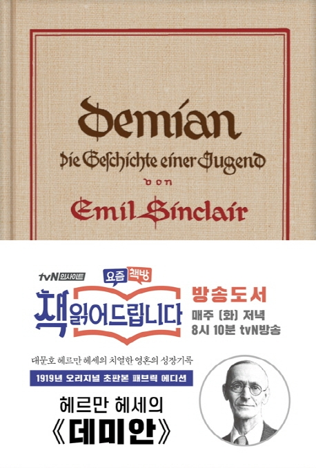

'데미안'은 헤르만 헤세라고 하는 스위스 작가가 1919년 '에밀 싱클레어'라는 가명으로
출판한 소설이다. 내용을 간단하게 소개하자면 '에밀 싱클레어' 라는 인물의 자기성찰을
담은 내용이다. 그는 '데미안' 이라는 인물을 만나며 그의 내면의 목소리를 듣기 시작한다.
그러한 과정에서 싱클레어는 방황과 고독의 시기를 겪기도 하지만, 결국 진정한 자아를 찾으며
당당하게 세계와 마주하게 되는 내용이다.
작품 외적으로 보자면 세계대전 이후 전쟁과
개인의 관계에서, 아무 이유도 없이 자신을 희생해야 하는 현실과 자아에 관계에 고민하는 청년들을
안내해주는 길잡이 역할을 한다.